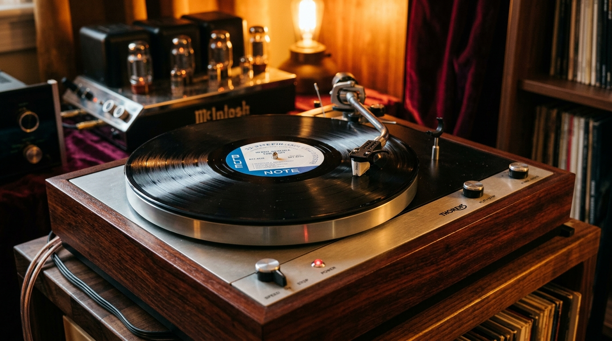
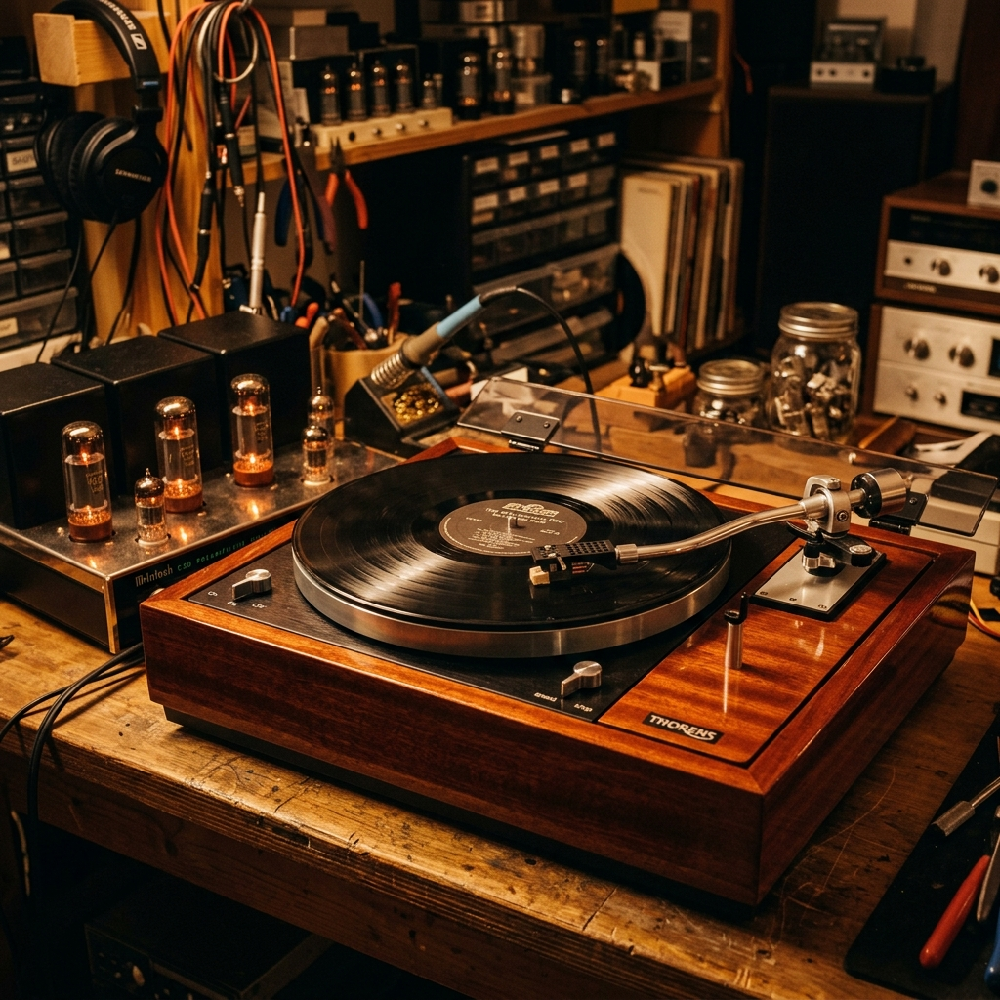
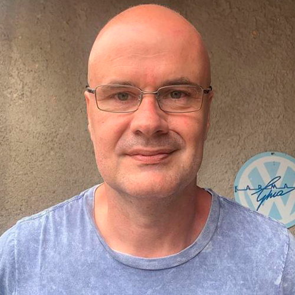
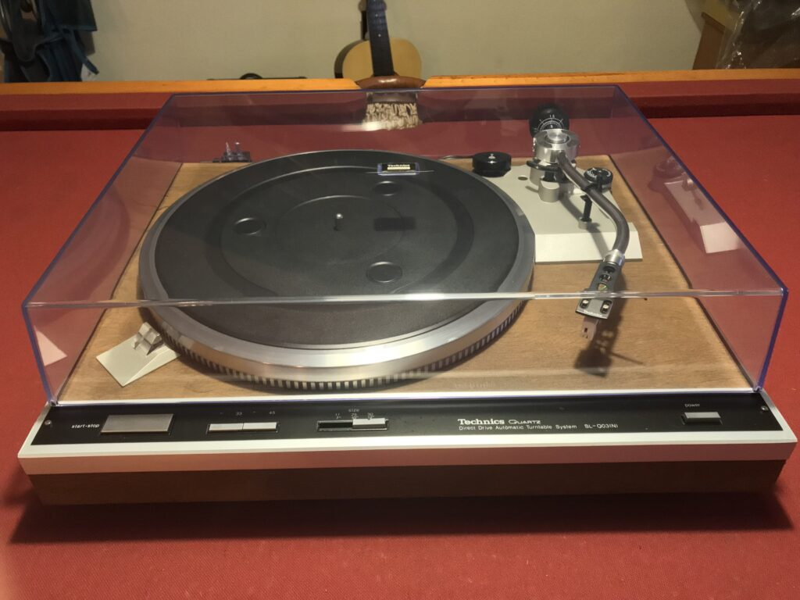
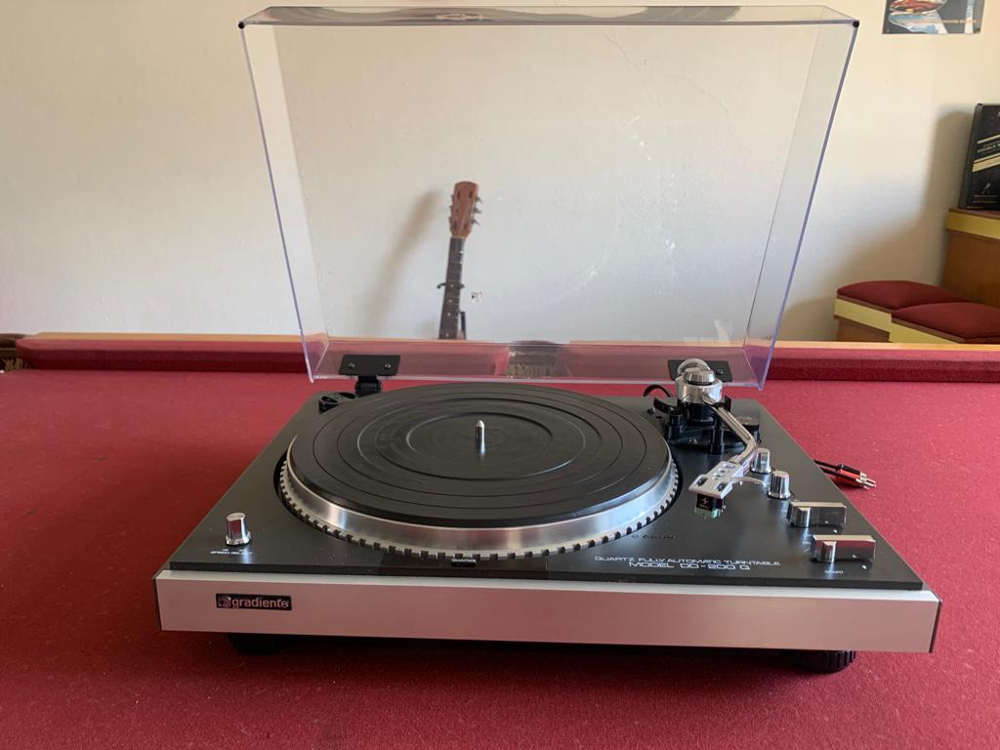

Restauramos, reparamos e comercializamos equipamentos Vintage. Somos especialistas em toca-discos e vitrolas das décadas de 60, 70, 80 até os modelos atuais no ABC Paulista.
Estamos em Santo André, no ABC Paulista – SP.
Começamos como um Hobby, e lá se vão alguns anos… Fomos aperfeiçoando e em 2016 surgiu a marca Loucos Por Vitrola. Restauramos, reparamos e comercializamos equipamentos Vintage, nos especializamos em toca discos das décadas de 60, 70, 80,… até os atuais.
A paixão em toca discos é levada a sério. Curtimos nossos aparelhos e preparamos todos os equipamentos que restauramos como se fossem para nosso próprio uso.
Colecionador apaixonado por Garrard's e bolachões de rock. Responsável pelas manutenções eletrônicas, peças, soluções e atendimento.

Artista e restaurador de carros antigos. Responsável pelo trabalho mecânico, marcenaria, pintura, polimento de acrílico e detalhes estéticos.
Do ajuste fino de rotação à restauração completa de marcenaria e circuitos originais.

Seguindo a originalidade e o mais rigoroso padrão de qualidade fazemos de nossas restaurações uma obra de arte. Também respeitamos o desejo dos clientes de atualizar ou personalizar seus equipamentos.

Revisão eletrônica, calibração de pitch, troca de correias, substituição de cápsulas e agulhas, desmonte mecânico, lubrificação fina e regulagem de anti-skating.

Todos os equipamentos comercializados são revisados e com garantia de 90 dias. Passam por rigoroso processo de testes e ajustes antes de serem oferecidos a nossos clientes.
Revisados minuciosamente em bancada com garantia oficial Loucos por Vitrola de 90 dias.
Está quebrado ou quer atualizar seu Set? Converse com os Loucos por Vitrola! Avaliamos seu aparelho, realizamos reparos de precisão ou aceitamos na troca.
Confira alguns dos trabalhos executados e obras de arte sonoras que passaram pela nossa oficina.




Desde a gravação em fita magnética e corte da matriz em acetato de laca, até a prensagem em vinil quente a centenas de graus. A magia analógica preservada em cada microssulco.
Conheça mais sobre a cultura analógica →A vitrola tradicional possui amplificação e caixas de som embutidas no próprio móvel ou maleta. Já o toca-discos profissional compõe sistemas modulares de alta fidelidade conectados a receivers e caixas dedicadas.
Tire suas dúvidas técnicas conosco →Entre em contato conosco e mergulhe em um mundo de música! Atendimento humanizado direto com nossos especialistas.